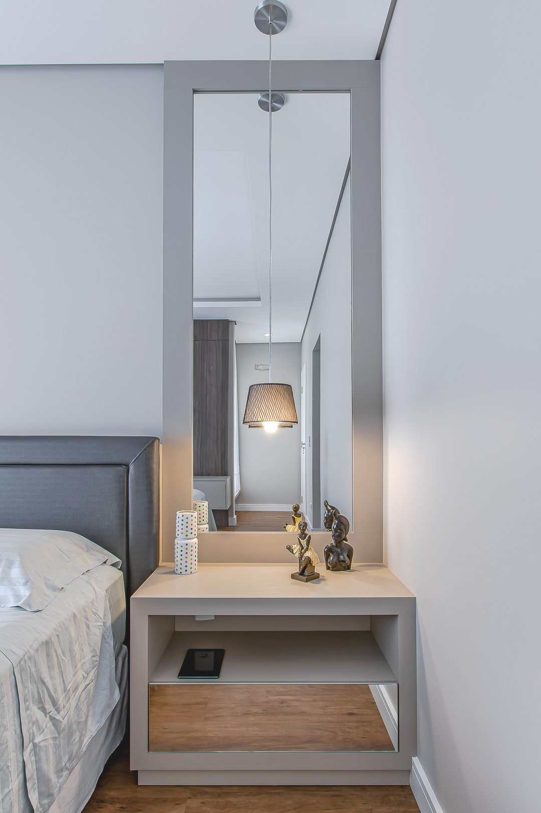
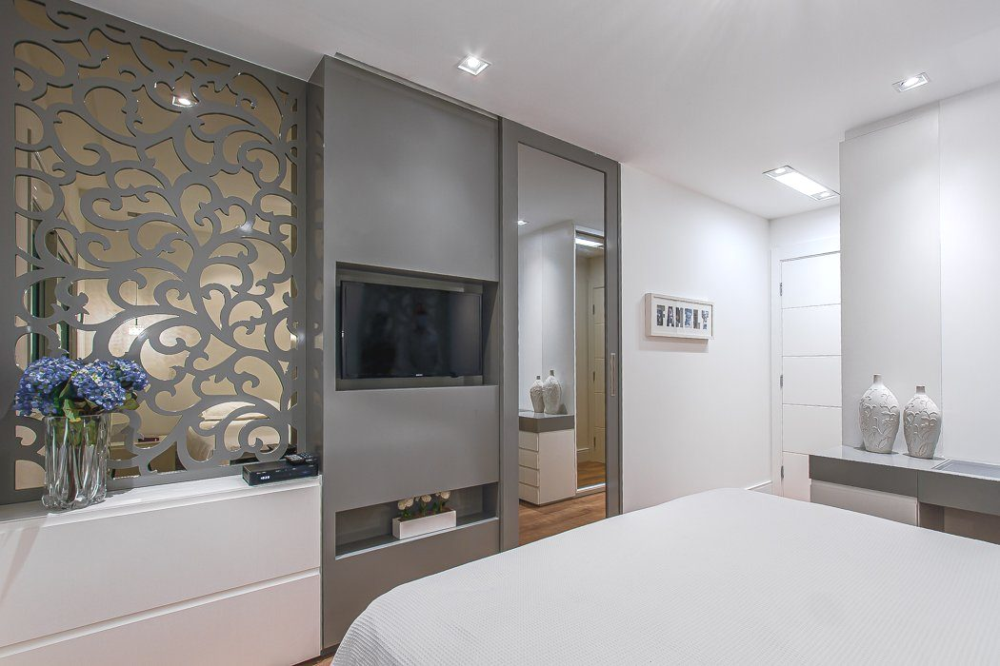
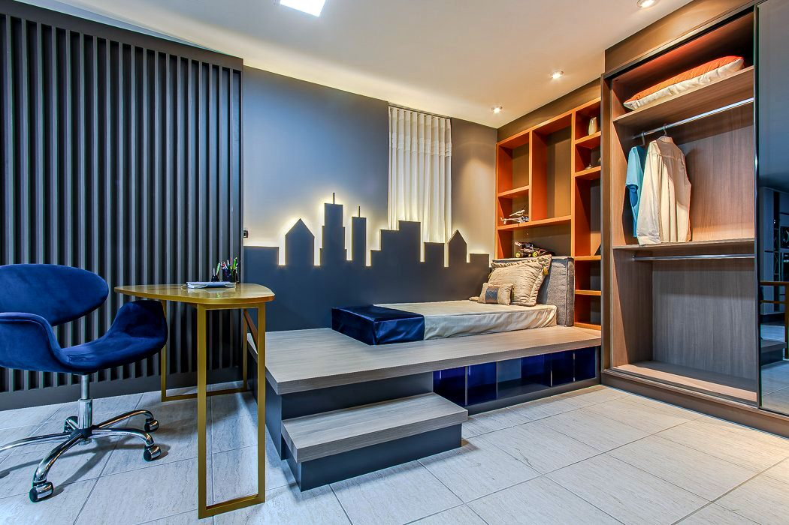
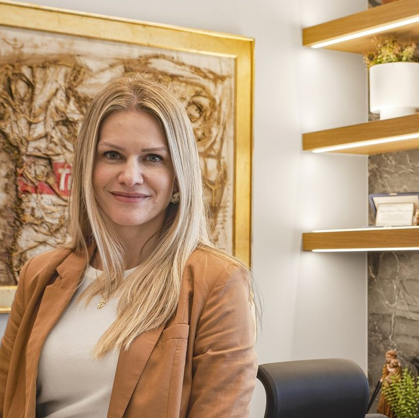

Marcenaria de alto padrão — Curitiba
Móveis planejados
para você.
A Klistocch é uma marcenaria de alto padrão localizada em Curitiba. Desenvolvemos móveis planejados e pensados para o seu estilo.
Cada cômodo, uma peça única.
Da cozinha integrada ao home office: projetamos, produzimos e montamos móveis sob medida para todos os espaços da sua casa.

Um processo pensado para durar.
Consultoria técnica
Um especialista Klistocch ouve suas necessidades, estilo e orçamento para definir a melhor solução.
Projeto personalizado
Nossos designers desenham cada detalhe — materiais, acabamentos, cores e funcionalidade — sob medida.
Fábrica própria
Marcenaria tradicional aliada a tecnologia de usinagem para precisão e qualidade de acabamento.
Entrega e montagem
Equipe própria de montadores instala com cuidado, respeitando o prazo acordado e a sua casa.

Tradição, tecnologia e atenção.
Sediada em Curitiba, a Klistocch Móveis atua com competência e seriedade desde 1988, produzindo móveis sob medida para ambientes residenciais e corporativos.
Com fábrica própria, a empresa mescla o formato artesanal e tecnológico de produção, possibilitando uma variedade de acabamentos para os mais exigentes gostos.
Veja, toque e escolha.
Visite nosso showroom para conhecer modelos, ferragens, acabamentos e materiais de perto. Decidir fica mais fácil quando você pode ver tudo nos mínimos detalhes.
Agendar visita
Por que as pessoas acreditam em nós.
“Gente! super recomendo! Eles são ótimos!! Um trabalho primoroso, desde as designer's até os montadores! O preço é justo e a assistência técnica perfeita!! São mais de 10 anos que somos clientes e sempre com o mesmo esmero e dedicação!!”
“Projeto que a Klistocch fez foi impecável, ao ver o projeto me apaixonei, fechamos imediatamente. Os montadores são caprichosos e atenciosos. Sou muito exigente e detalhista, e tudo ficou do jeito que idealizei. Fizemos todos os ambientes (cozinha, 2 banheiros, lavabo, 3 quartos, sala, lavanderia, churrasqueira), ficou tudo perfeito. Agradeço a todos, vocês são realmente os melhores. Super indico.”
“A Klistocch é um parceiro importante nos meus projetos comerciais e residenciais. A execução sempre fiel ao projetado e a qualidade dos produtos é acima da média.”
“Amo minha cozinha. É onde passo a maior parte do tempo aqui em casa, preparando receitas especiais e reunindo a família. A cozinha é muito aconchegante e tem um jeito meio 'rustico' que eu adoro.”
A casa é onde a conexão acontece.
Vamos pensar no seu mobiliário e transformar o seu ambiente? Traga o seu projeto para a Klistocch.
Peça um orçamento agora